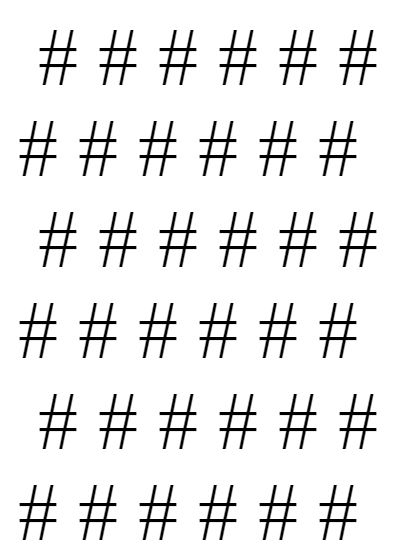

My favorite subject in school has been BY FAR my web Apps class. Feel free to click on any of the images to check out the excercies.
Here's an excercise where I change specific numbers to different names, AND allow the user to make a checkerboard with whatever width and height they want made out of whatever symbol they want. Also, in the same file I made JavaScript write out numbers 1-100 and had it change every 3rd, 5th, and 15th number to "Just Art3mis", "Just Parzival", and "Art3mis and Parzival" respectively.
This is another example of my adventure into javascript. It has four fields each doing something different. They do, in order: 1. show the smaller of the two numbers you input 2. The second one tells whether the number you input is odd (it will display true) or even (it will display false) 3. counts the number of b's in whatever you put into the text box 4. counts the number of characters in the text you input. the character it searches for will be whatever you put in the second box. It is case sensitive.